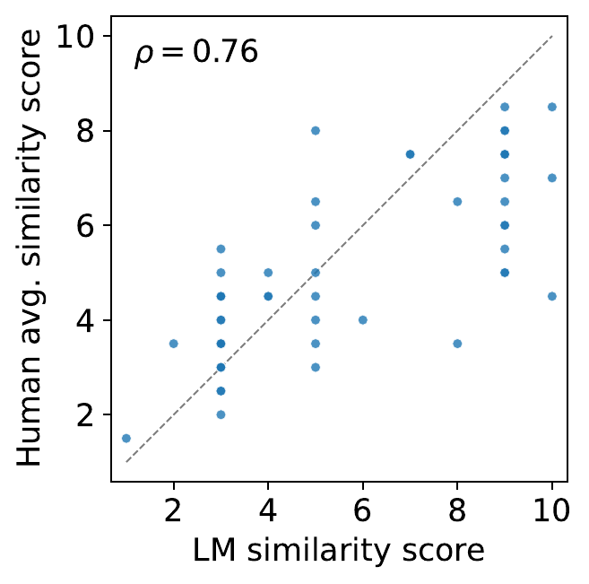
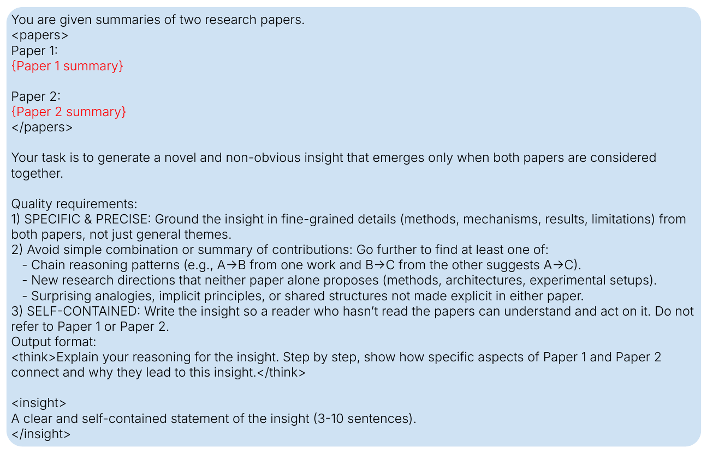
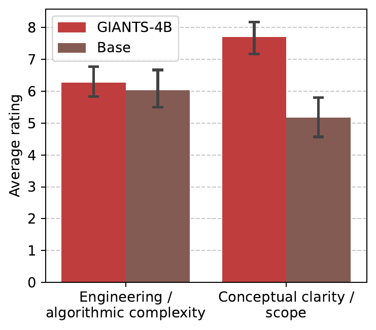
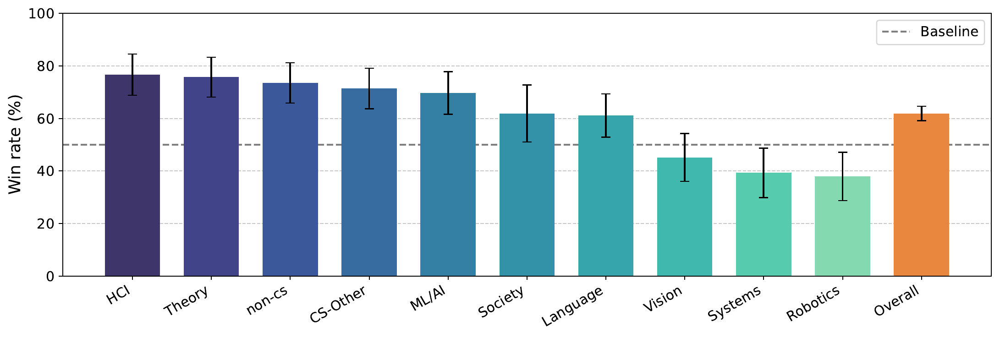
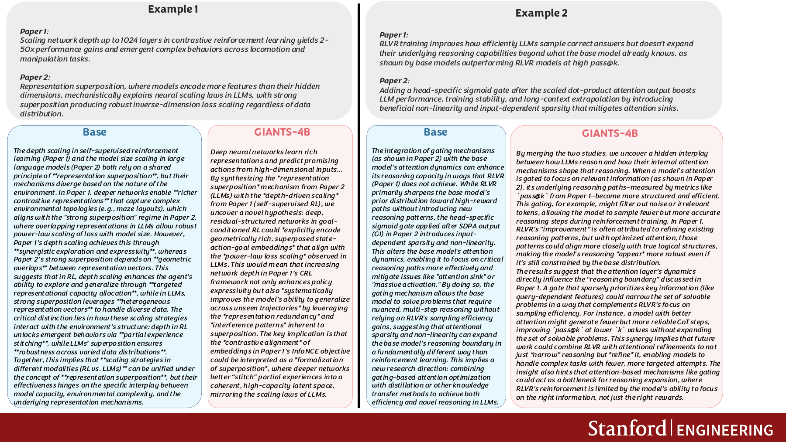
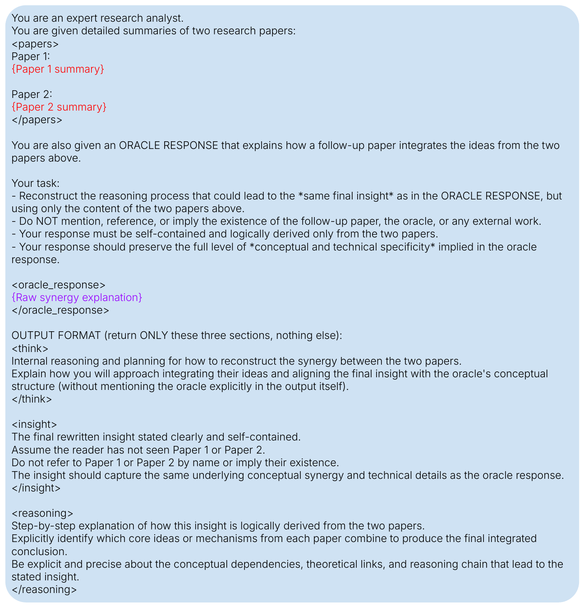

Input
Two parent paper summaries that capture the foundations of a future paper.
Scientific breakthroughs often emerge from synthesizing prior ideas into novel contributions. GIANTS introduces insight anticipation, a literature-grounded task that asks a model to predict a downstream paper's core contribution from the summaries of its two foundational parent papers. To study this setting, the paper builds GiantsBench, a benchmark of 17,839 paper tuples spanning eight scientific domains, and evaluates generations with an LM judge whose similarity scores are positively correlated with expert human ratings. The paper then trains GIANTS-4B with reinforcement learning to optimize that similarity score, reporting substantial gains over both supervised baselines and larger proprietary models.
The paper reframes automated scientific discovery as a targeted synthesis problem. Instead of asking a language model to brainstorm ideas in the abstract, it asks whether the model can anticipate the next scientific step once the relevant intellectual ancestors are already known.
Each example contains two parent paper summaries as input and a rewritten statement of the downstream paper's key contribution as the target. This isolates the generation problem from the harder retrieval problem of choosing which prior work matters.
Two parent paper summaries that capture the foundations of a future paper.
A standalone description of the downstream paper's core insight.
A 1-10 similarity judgment comparing the generated insight to the target insight.
GiantsBench is constructed from 17,839 arXiv papers dated between May 23, 2007 and January 23, 2026, filtered to papers with at least two citations. For each paper, an LM identifies two cited parent papers whose ideas are synergistically combined in the child paper, then produces a textual explanation of that synergy. Parent papers are summarized into compact inputs, and the child-paper contribution is rewritten into a standalone target insight.
Training uses only the Language domain before the July 1, 2023 cutoff, while evaluation is performed on future papers across domains. The paper also reports a stricter unseen-parent split, where none of the parent papers in evaluation appeared during training.


The paper studies three ways to train an insight anticipator from a Qwen3-4B base model: direct supervised fine-tuning on the target insight, supervised fine-tuning with synthetic chain-of-thought, and reinforcement learning that optimizes semantic similarity to the target contribution.
The key result is that imitation learning is not enough. Plain SFT underperforms, SFT with reasoning traces improves only slightly, and the strongest model comes from reinforcement learning with GRPO using LM-based similarity as the reward. Training uses Gemini-2.5-Flash as the reward model, while evaluation uses Gemini-3-Pro and Qwen3-14B as separate judges.
Distilling the target contribution directly does not reliably teach the model how to synthesize a new scientific leap from two parents.
GIANTS-4B samples candidate insights, scores them with an LM judge, and optimizes toward generations that better match the real child paper contribution.
The paper's main claim is that reinforcement learning produces a much stronger insight anticipator than both supervised baselines and larger proprietary models. The gains hold across domains and remain visible on the stricter unseen-parent split.
| Model | Full Test | Unseen Parents |
|---|---|---|
| Qwen3-4B | 4.75 | 4.87 |
| SFT | 5.01 | 5.10 |
| SFT-think | 5.05 | 5.11 |
| Gemini-2.5-Pro | 4.65 | 4.78 |
| Gemini-3-Pro | 4.43 | 4.57 |
| GIANTS-4B | 5.97 | 6.11 |
Overall similarity scores summarized from the paper's appendix tables. Higher is better.





Beyond the metrics, the paper argues that GIANTS-4B produces better kinds of scientific suggestions. The base model often sounds ambitious but unsupported, while GIANTS-4B is described as making narrower, more grounded connections between parent papers.

The paper operationalizes insight anticipation through a compact prompt stack: find the parents, rewrite the target insight, generate a new insight from parent summaries, and score the result with an LM judge.



The paper is intentionally conservative. It assumes each downstream paper can be explained by only two parents, even though real scientific ideas usually draw from broader context. It also treats citations as a noisy proxy for intellectual ancestry and assumes that the relevant parent papers have already been identified.
The natural next step is an end-to-end discovery system that first retrieves likely parent papers, then synthesizes candidate contributions, and finally evaluates them for novelty, feasibility, and scientific value.